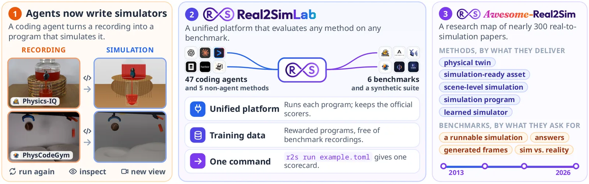
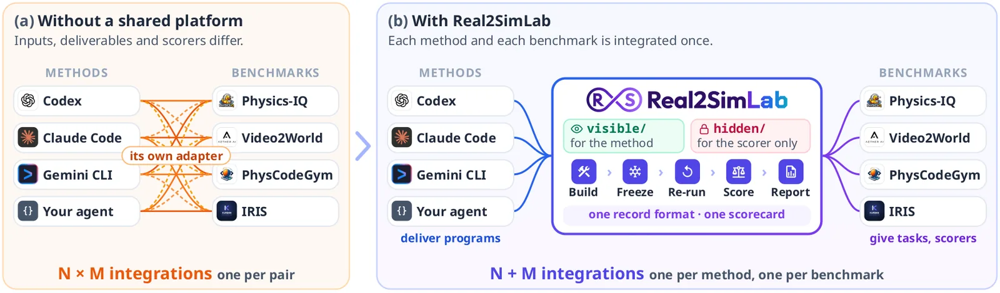
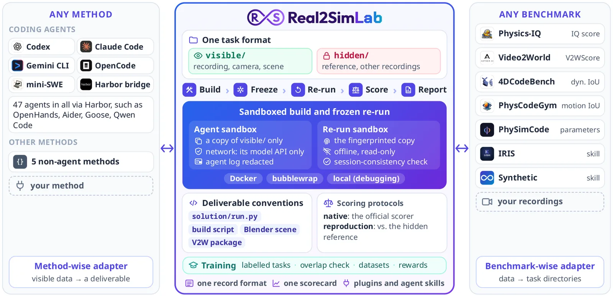
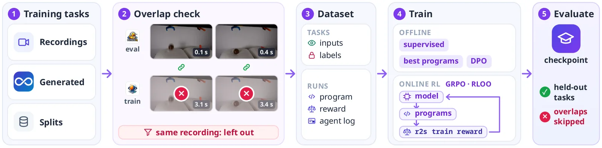

O Problema da Fragmentação em Simulações Geradas
A transferência de real para simulação (Real-to-Simulation Transfer) é um campo estabelecido que busca construir ambientes simulados a partir de observações do mundo real, como vídeos ou varreduras 3D. Tradicionalmente, isso exigia pipelines dedicados para cada tipo de cena ou objeto. No entanto, com o avanço de modelos de linguagem e agentes de codificação, surgiu um novo paradigma: pedir a um agente que escreva um programa de simulação diretamente a partir de um vídeo.
Apesar do potencial, a área sofre com uma fragmentação crítica. Cada benchmark existente define seus próprios formatos de entrada, entregáveis esperados e pipelines de pontuação. Isso cria um problema de escalabilidade exponencial. Para avaliar N métodos diferentes em M benchmarks distintos, são necessárias N vezes M integrações específicas. Cada par método-benchmark exige um adaptador personalizado, tornando a comparação de resultados entre trabalhos de pesquisa difícil e custosa.

A Proposta: Real2SimLab
Para resolver essa ineficiência, os autores apresentam o Real2SimLab, uma plataforma unificada para transferência de real para simulação. A ideia central é simples, mas impactante: usar o programa gerado pelo agente como a interface comum entre os métodos e os benchmarks. Em vez de adaptar o método para cada benchmark ou vice-versa, a plataforma normaliza o formato da tarefa e executa o código entregue pelo agente, utilizando o avaliador oficial de cada benchmark para pontuar o resultado.

Arquitetura Técnica e Redução de Complexidade
A arquitetura do Real2SimLab opera através de dois tipos de adaptadores. De um lado, existem adaptadores específicos de método, que conectam cada agente (como Codex, Claude Code ou Gemini) à plataforma. Esses adaptadores passam a tarefa visível para o agente e coletam o programa de código que ele produz. Do outro lado, existem adaptadores específicos de benchmark, que convertem os dados brutos de cada benchmark (como Physics-IQ, Video2World, PhysCodeGym, IRIS, 4DCodeBench e outros) em tarefas em um formato compartilhado.

Execução e Pontuação Padronizada
Uma vez que o agente gera o código, o Real2SimLab o executa em um ambiente controlado (sandbox) para produzir a saída da simulação, seja ela uma sequência de frames, uma cena 3D ou um script de ação. Em seguida, a plataforma utiliza o código de pontuação original e oficial de cada benchmark para avaliar essa saída. Isso garante que a métrica de desempenho seja consistente com a definição original do benchmark, permitindo comparações justas entre diferentes métodos que foram treinados ou ajustados para tarefas diferentes.
Pipeline de Dados de Treino e Prevenção de Vazamento
Além da avaliação, o Real2SimLab oferece um pipeline robusto para a criação de dados de treinamento com anotações de recompensa (reward annotations). Um problema comum em aprendizado por reforço e fine-tuning de agentes é a contaminação de dados, onde o modelo vê dados de teste durante o treinamento. Para evitar isso, o pipeline compara os frames de cada gravação de treinamento com os frames das tarefas de avaliação de todos os benchmarks.

Filtragem Rigorosa de Dados
O sistema não apenas procura por correspondências exatas, mas também identifica cópias que foram re-encodadas, redimensionadas ou cortadas. Apenas as gravações que não aparecem em nenhuma tarefa de avaliação são mantidas para o treinamento. Para cada gravação filtrada, o pipeline gera um programa usando um método e calcula sua recompensa usando o mesmo código de avaliação do Real2SimLab. Isso cria um conjunto de dados limpo e pronto para fine-tuning offline de agentes.
Avaliação e Suporte Atual
Até o momento, o Real2SimLab suporta a avaliação de 47 agentes de codificação e 5 métodos não baseados em agentes em 6 benchmarks diferentes. Essa abrangência permite uma análise detalhada do estado da arte. A plataforma também inclui o Awesome-Real2Sim, um mapeamento de pesquisa com quase 300 artigos sobre transferência de real para simulação, ajudando pesquisadores a escolherem baselines e benchmarks adequados.
Limitações e Escopo
É importante notar que o Real2SimLab não treina modelos por si só; ele serve como infraestrutura de avaliação e preparação de dados. O foco está na padronização e na reprodutibilidade. Além disso, a eficácia da plataforma depende da qualidade dos adaptadores de benchmark, que devem preservar a fidelidade dos avaliadores originais. O campo ainda carece de benchmarks que avaliem a generalização física profunda, focando mais na reprodução visual e de ações imediatas.
Conclusão
O Real2SimLab representa um passo significativo na maturação do campo de simulação gerada por agentes. Ao unificar a interface entre métodos e benchmarks, ele reduz barreiras técnicas e incentiva a comparação rigorosa. A disponibilização do código e do mapeamento de pesquisa abre caminho para colaborações futuras na comunidade Real2SimHub, promovendo o desenvolvimento de simulações mais precisas e reutilizáveis a partir de observações reais.
O que fica
- Real2SimLab unifica a avaliação de agentes de código em simulações, reduzindo a complexidade de integração de benchmarks de N×M para N+M.
- A plataforma usa o programa gerado pelo agente como interface comum, executando-o e pontuando-o com os avaliadores oficiais de cada benchmark.
- Um pipeline robusto filtra dados de treinamento para evitar vazamento, identificando até cópias re-encodadas ou modificadas de gravações de teste.
- O projeto suporta 47 agentes e 6 benchmarks, além de fornecer um mapeamento de 300 artigos para orientar pesquisas futuras.
Paper original: Real2SimLab: A Unified Platform for Real-to-Simulation Transfer
Comentários
Nenhum comentário ainda. Seja o primeiro.